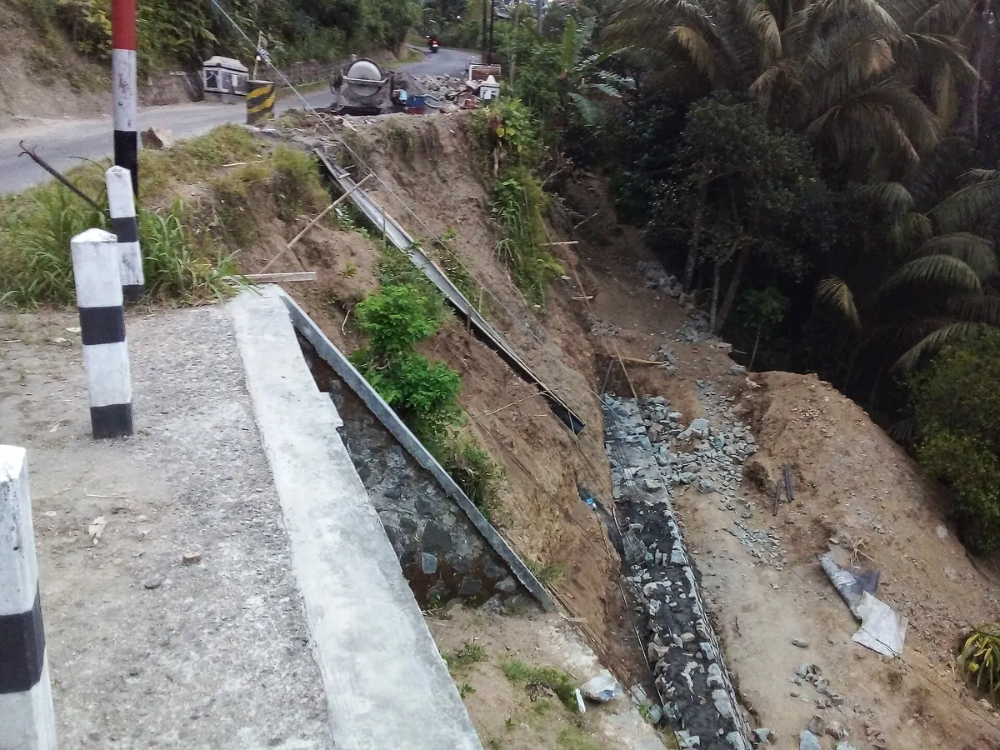

Mengenal dan Menghadapi Longsor
Mulai dari awan penuh hujan, kita menggali ke dalam lereng, lapis demi lapis, untuk paham kenapa tanah bisa bergerak. Lalu kita naik lagi ke tempat yang aman.
Gulir untuk menggaliRingkasan disarikan dari siaran resmi BNPB dan Badan Geologi (Kementerian ESDM). Sebagian sumber berupa berita kejadian, bukan buku panduan. Ringkasan ini tidak menggantikan arahan BPBD dan petugas setempat.

Apa itu longsor dan apa penyebabnya?
Longsor terjadi ketika tanah di lereng yang labil bergerak turun dan menimbulkan bencana, terutama bagi warga yang tinggal di tempat lebih rendah. Badan Geologi menyebut kejadian ini gerakan tanah longsor.
- 1. Hujan derasHujan intensitas tinggi turun, kadang beberapa hari.
- 2. Air meresapHujan lebat menambah tekanan air di dalam tanah.
- 3. Tanah jenuhKekuatan tanah turun, lereng makin lemah.
- 4. Lereng gagalTanah di atas bidang gelincir bergerak turun.
Pemicu menurut sumber resmi
- Hujan intensitas tinggiBNPB menyebut hujan yang berlangsung beberapa hari. Badan Geologi menjelaskan bahwa hujan lebat menambah tekanan air di dalam tanah dan menurunkan kekuatannya sehingga lereng gagal.
- Gempa bumiGetarannya dapat melemahkan kekuatan lereng.
- Kegiatan manusiaSeperti pemotongan lereng dan peledakan di area tambang.
Yang memengaruhi mudah tidaknya lereng longsor
- Kemiringan dan bentuk lereng
- Kondisi geologi
- Kondisi air atau hidrologi di lereng
- Perubahan tata guna lahan
- Kegagalan konstruksi
- Saluran air permukaan yang belum baik
 Jendela potongan
Jendela potongan
Sumber: BNPB, “Tanah Longsor” (27 Des 2017); Kementerian ESDM/Badan Geologi, “Curah Hujan Tinggi, Masyarakat Diminta Waspadai Gerakan Tanah Longsor” (6 Feb 2018); Kementerian ESDM/Badan Geologi, “Longsor Terjang Desa Pasirlangu, Badan Geologi Ingatkan Ancaman Longsor Susulan” (25 Jan 2026).
Tanda-tanda bahaya
Warga yang tinggal di perbukitan atau dekat tebing diminta mengenali tanda awal berikut dan terus memantau keadaan sekitar. Angka kedalaman di sisi kiri hanya penanda visual.
- −6 m

Jalan amblas dan talud runtuh, Ayah, Kebumen1Retakan di tanah atau lereng
BNPB menyebut retakan yang sejajar dengan tebing.
- −7 m
 2
2Mata air baru atau air keruh
Mata air baru muncul, atau air mata air dan sumur tiba-tiba keruh.
- −8 m
Pohon atau tiang miring
Pohon atau tiang yang tadinya tegak mulai miring.
- −9 m
 4
4Kerikil berjatuhan dari tebing
Kerikil atau butiran tanah mulai jatuh dari tebing.
- −10 m
 Lereng longsor di atas rumah warga, Kebumen5
Lereng longsor di atas rumah warga, Kebumen5Suara gemuruh dari dalam tanah
Bila terdengar, anggap itu peringatan dan ikuti langkah di bab Saat.


Sumber: BNPB, “Tanah Longsor di Tapanuli Selatan Telan Dua Korban Meninggal” (23 Feb 2025); Badan Geologi, “Tanah Longsor Kembali Terjadi di Ponorogo, Masyarakat Diminta Waspada” (9 Apr 2017). Foto hanya ilustrasi lereng, bukan bukti tanda.
Persiapan sebelum longsor
- Waspadai hujan dengan curah tinggi dan simak informasi tentang hujan serta kemungkinan longsor. BNPB menyebut radio sebagai salah satu sarana.
- Siapkan makanan dan minuman siap saji, senter beserta baterai cadangan, uang tunai secukupnya, dan obat-obatan sesuai kebutuhan.
- Jangan menebang tanaman keras di lereng, jangan menggali lereng secara tegak lurus, dan atur aliran air permukaan di lereng.
- Bersiaplah mengevakuasi diri begitu pihak berwenang menginstruksikannya.


Sumber: BNPB, “Tanah Longsor” (27 Des 2017); Badan Geologi, “Tanah Longsor Kembali Terjadi di Ponorogo, Masyarakat Diminta Waspada” (9 Apr 2017); BNPB, “Tanah Longsor di Tapanuli Selatan Telan Dua Korban Meninggal” (23 Feb 2025).
Saat longsor terjadi
Terdengar gemuruh? Segera keluar ke tempat lapang.
Di dalam rumah
Bila terdengar suara gemuruh, segera keluar menuju tempat lapang yang tidak terhalang.
Di luar rumah
Cari tempat lapang dan perhatikan sisi lereng atau tanah yang longsor.
Ikuti arahan
Ikuti arahan BPBD dan petugas setempat.

 Jendela potongan
Jendela potongan
Sumber: BNPB, “Tanah Longsor” (27 Des 2017).
Setelah longsor
- Jangan segera kembali ke rumah. Daerah bencana dan sekitarnya masih berpotensi longsor susulan, terutama saat dan setelah hujan deras, sehingga warga diminta mengungsi ke lokasi yang aman.
- Bila diminta membantu evakuasi, pakai sepatu khusus dan peralatan keselamatan, pastikan pijakan cukup kokoh, jangan memperburuk keadaan di reruntuhan, atau tunggu petugas.
- Badan Geologi mengingatkan petugas agar tidak melakukan penanganan atau pencarian korban saat dan sesudah hujan deras karena risiko longsor susulan masih tinggi.

Sumber: BNPB, “Tanah Longsor” (27 Des 2017); Badan Geologi, “Tanah Longsor Kembali Terjadi di Ponorogo, Masyarakat Diminta Waspada” (9 Apr 2017); Kementerian ESDM/Badan Geologi, “Longsor Terjang Desa Pasirlangu…” (25 Jan 2026).
Kamu sudah di permukaan. Simpan nomor ini.
Aparat desa dan BPBD kabupaten/kota. Kontak BPBD Provinsi Jawa Barat di bpbd.jabarprov.go.id.
Yang belum disediakan aplikasi ini
SIAGA Longsor belum memberikan peringatan dini maupun perintah evakuasi. Prediksi harian masih percobaan. Tujuan dan rute evakuasi antardesa belum tersedia. Ikuti arahan BPBD atau petugas setempat.